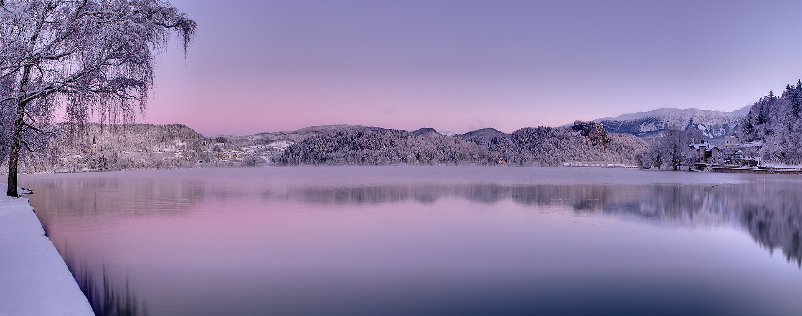

Ljubljana and Lake Bled · 5-day family itinerary
Keep a compact Slovenia route calm: three Ljubljana nights, two Lake Bled nights, one protected transfer and enough slack for family energy and mountain weather.

A short route with one deliberate move
This draft protects the arrival day, keeps Ljubljana as the first low-friction base, and moves the family to Bled only after the city days are complete.
Two adults and two school-age children; moderate pace with a midday reset rather than a full-day attraction stack.
Ljubljana for three nights, then a single Ljubljana → Bled transfer for two nights; no backtracking through the city.
Transport, tickets, opening hours, weather, accessibility, prices and supplier terms need live confirmation. A booking-hub link is intent only.
Planning boundary: dates are illustrative; this page does not claim live availability, reservations, current prices or a completed booking.
Why this order works
Family brief: two adults and two children; illustrative dates; moderate pace; mid-range budget; interests in local food, walkable old towns and one lake-and-mountain nature anchor. This is the information a family can turn into an editable, shareable plan in Alfred rather than leaving it scattered across messages and tabs.
Start in Ljubljana so the family can recover from arrival without committing to a long transfer. Use the central market and riverfront as a flexible first full day, then choose either a castle-and-museum day or a slower neighbourhood loop. Transfer to Bled after breakfast on Day 4, with the afternoon reserved for the lakeside rather than a second major attraction.
Base plan: Ljubljana nights 1–3; Bled nights 4–5. Keep the departure morning uncommitted until the confirmed airport/rail plan is known. If mountain weather or family energy turns, swap the Bled outdoor anchor for a shorter lakeside circuit and indoor stop.
Day 1 — Arrive softly in Ljubljana
After arrival and luggage drop, keep the first walk within the pedestrian centre: Prešeren Square → Triple Bridge → the Ljubljanica riverfront, roughly 16:00–18:00 depending on arrival. Choose a simple dinner around the Central Market area before returning to the base.
Why it fits: one compact loop gives the children a first sense of place without spending the arrival reserve on a cross-city transfer.
Fallback: if arrival is late or bags are delayed, skip the river loop and use a nearby meal; do not turn Day 1 into a timed attraction day.
Day 2 — Ljubljana’s castle-and-market day
Use the morning for Ljubljana Castle and its hillside approach, approximately 09:30–12:30, then return towards the Central Market for lunch. Protect 13:30–15:30 as a hotel or café reset before a short riverfront wander and dinner in the old town.
Why it fits: the castle supplies the day’s main vertical effort and viewpoint; the afternoon is intentionally low-commitment for a family still adjusting to the route.
Fallback: if heat, rain or access conditions make the castle unattractive, use the City Museum area and a shorter old-town loop; confirm current access and ticket rules live.
Day 3 — Choose Tivoli’s breathing room
Take a slower morning through Tivoli Park towards the International Centre of Graphic Arts area, with an approximate 10:00–13:00 window, then lunch near the city centre. Keep the late afternoon open for a final Ljubljana food stop and packing.
Why it fits: the family gets a genuine lower-intensity day before changing bases, while the route remains within Ljubljana rather than adding a day trip.
Fallback: if rain or fatigue wins, shorten Tivoli to the park edge and move indoors; check current museum opening and accessibility information before committing.
Day 4 — Transfer to Bled, then stop at the lake
After breakfast, make the Ljubljana → Bled transfer the only major task before lunch. Treat the route as a protected morning block rather than promising a fixed travel time; confirm the current bus, rail-plus-road or private-transfer option, luggage handling and road conditions. After check-in, walk the Bled lake shore from the town side towards the western viewpoints for approximately 15:00–17:00.
Why it fits: the family sees the lake on arrival without stacking the castle, boat and a long walk onto a transfer day.
Fallback: if the transfer runs late or weather closes the view, settle into the base and use a short lakeside section; save Bled Castle or a boat decision for the next morning only after live checks.
Day 5 — Bled’s one anchor with an exit buffer
Choose one principal morning anchor: either the lakeside circuit with a confirmed boat/rowing option or Bled Castle if the family prefers a shorter, more structured visit. Use roughly 09:00–12:30, lunch in Bled, then keep the afternoon flexible for a final shore walk, rest, or the onward departure plan.
Why it fits: the family gets a memorable lake decision without pretending that every outdoor option belongs in the same half-day.
Fallback: in poor weather, replace the boat and long circuit with the castle or a shorter town-and-lake section; recheck access, weather, tickets and the confirmed departure connection.
Planning notes
Keep this route editable. Recheck current transport schedules, tickets, opening hours, weather, accessibility, baggage rules, prices and cancellation terms at decision time. If a booking-hub link is opened, that records intent only; it does not prove a booking occurred.
Plan a trip
For these two bases, use Multi-City. Turn your people, dates, pace, budget and interests into an editable plan you can review and share.